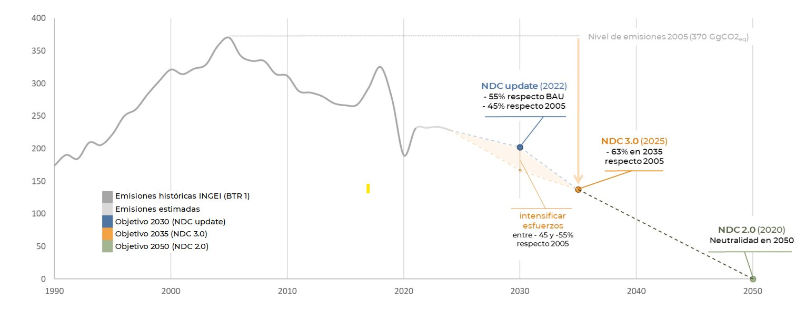

© Oficina de l'Energia i del Canvi Climàtic 2025
Tercera Contribución Determinada a nivel Nacional ante la Convención Marco de las Naciones Unidas sobre Cambio Climático (CMNUCC). Presentada y aprobada por el Gobierno de Andorra, 5 de febrero de 2025.
AR6 | Sexto informe de evaluación del GIECC |
BAU | Business as usual, escenario inmovilista |
BTR | Informe bienal de transparencia |
CMNUCC | Convención marco de las Naciones Unidas sobre el cambio climático |
CNECC | Comisión nacional de energía y cambio climático |
COP | Conferencia de las partes |
CTP | Comunidad de trabajo de los Pirineos |
CP/RA | Conferencia de las partes en calidad de reunión de las Partes en el Acuerdo de París |
EENCC | Estrategia energética nacional y de lucha contra el cambio climático |
GEI | Gases de efecto invernadero |
Gg | Giga gramo, 1.000 toneladas, 1.000.000 kg, 1.000.000.000 g |
GWP | Poder de calentamiento global (PCG) |
INDC | Contribuciones esperadas determinadas a nivel nacional |
INF | Inventario nacional forestal de Andorra |
IPCC | Grupo intergubernamental de expertos sobre el cambio climático (GIECC) |
NDC | Contribuciones determinadas a nivel nacional |
NZEB | Edificios de consumo energético casi nulo |
OIF | Organización internacional de la francofonía |
OPCC | Observatorio pirenaico del cambio climático |
PAACC | Proceso participativo sobre la adaptación de Andorra al cambio climático |
PAN | Plan de adaptación nacional |
TER | Revisión Técnica de Expertos |
UE | Unión Europea |
El Principado de Andorra reafirma su compromiso con la acción climática global mediante la presentación de su Tercera Contribución Determinada a Nivel Nacional (NDC 3.0), alineada con el Acuerdo de París y los objetivos establecidos en el primer Balance Global de la COP28. Este documento establece una meta de reducción del 63% de las emisiones netas de gases de efecto invernadero para 2035 en comparación con los niveles de 2005, con la ambición de alcanzar la neutralidad de carbono en 2050.
En este nuevo marco, Andorra introduce un cambio significativo en su metodología de reducción de emisiones, pasando de un objetivo basado en un escenario inmovilista "business as usual" (BAU) a una meta de reducción absoluta con base en su pico de emisiones en 2005.
Para lograr esta meta, Andorra centra sus esfuerzos en el sector energético, responsable de la mayor parte de sus emisiones. Así, el país está impulsando la implantación de energías renovables, incluyendo la construcción de su primer parque eólico y el fomento de la producción de energía eléctrica renovable en edificios públicos y privados. También se avanza en la mejora de la eficiencia energética del sector de la edificación, con incentivos para la rehabilitación y la adopción de estándares de construcción de consumo casi nulo. En el sector del transporte, se continúa con la electrificación de la flota pública y privada, junto con la mejora del transporte público, que ya es gratuito en Andorra.
En materia de adaptación, Andorra está centrando esfuerzos en el estudio de los impactos y vulnerabilidades en cuatro sectores clave: energía, turismo, salud y agricultura. Para cada sector, se analizan los efectos del cambio climático en función de diferentes factores climáticos y, a partir de estos análisis, se definen indicadores específicos para evaluar los riesgos y establecer medidas de adaptación que definirán el futuro Plan de Adaptación Nacional. La cooperación internacional y regional también será fundamental, a través de iniciativas como el Observatorio Pirenaico del Cambio Climático y la participación en foros multilaterales sobre regiones de montaña.
A pesar de su mínima contribución a las emisiones globales, la NDC 3.0 de Andorra refuerza su liderazgo en materia de transparencia y ambición climáticas, siendo el primero en completar el proceso de revisión de su primer Informe Bienal de Transparencia, fortaleciendo así su capacidad de exigir mayor ambición climática al resto de Partes que tienen grandes potenciales de mitigación.
El Principado de Andorra reafirma y refuerza su compromiso con la acción climática global mediante la presentación de su Tercera Contribución Determinada a nivel Nacional (NDC 3.0, por sus siglas en inglés), alineada con los principios y objetivos establecidos en el Acuerdo de París. Este marco internacional, adoptado en 2015, constituye la hoja de ruta para abordar la crisis climática, con el objetivo de limitar el incremento de la temperatura media mundial a 2°C por encima del nivel preindustrial y esforzarse por no superar 1,5°C.
Andorra está alineada no solo con las metas del Acuerdo de París, sino también con los compromisos derivados del Primer Balance Mundial (First Global Stocktake) presentado el pasado 2023 en la Conferencia de las Partes celebrada en Dubai (COP 28). Este balance destaca la necesidad urgente de intensificar los esfuerzos colectivos para cerrar la brecha entre las emisiones actuales y el objetivo de limitación del aumento de temperatura global y pone en evidencia la importancia de que los países adopten metas más ambiciosas y enfoques inclusivos que combinen mitigación, adaptación y financiación climática.
Este primer balance pone de manifiesto la necesidad urgente de intensificar los esfuerzos e insta a las Partes a presentar las nuevas NDC entre 9 y 12 meses antes de la COP30/CMA7, es decir, antes del 10 de febrero de 2025. También insta a las Partes a que las nuevas NDC representen un progreso respecto a las anteriores y establezcan nuevos compromisos de reducción de emisiones que reflejen el mayor nivel de ambición posible para el año 2035.
Asimismo, esta NDC tiene en cuenta las conclusiones clave del Sexto Informe de Evaluación del Grupo Intergubernamental de Expertos sobre el Cambio Climático1 (IPCC, por sus siglas en inglés), que proporciona un marco científico sólido para la acción climática. El informe subraya que la limitación del calentamiento global a 1,5°C requiere reducciones rápidas, profundas y sostenidas de las emisiones de gases de efecto invernadero (GEI) en todos los sectores y de todos los gases.
En términos de adaptación al cambio climático, Andorra ha considerado las disposiciones previstas por el Objetivo Global de Adaptación que buscan mejorar la resiliencia frente al cambio climático en áreas clave como el agua, la producción de alimentos, los sistemas sanitarios, los ecosistemas, las infraestructuras, la pobreza y el patrimonio cultural. Este Objetivo Global establece, además, consideraciones clave para cumplir con sus metas. Para 2027, todas las partes deberán haber implementado sistemas de alerta temprana para múltiples peligros, servicios de información climática para la reducción de riesgos y medios de observación sistemática. Para 2030, se espera que todas las partes hayan establecido instrumentos de políticas, procesos o estrategias de planificación, incluidos los Planes Nacionales de Adaptación, y que hayan avanzado en su implementación. Esto debería contribuir a la reducción de los impactos sociales y económicos de los principales impactos climáticos.
Desde 2011, como parte de la Convención Marco de Naciones Unidas sobre el Cambio Climático (CMNUCC), Andorra ha buscado liderar con el ejemplo, siendo de los primeros países en presentar su INDC en 2015 y el primero en presentar y completar el proceso de revisión de su primer Informe Bienal de Transparencia2 (BTR, por sus siglas en inglés) dentro del Marco de Transparencia Reforzado del Acuerdo de París. Este paso subraya no solo el compromiso con la transparencia sino también con la responsabilidad y la urgencia que la acción climática merece y requiere.
Cabe destacar que una de las principales conclusiones de la Revisión Técnica de Expertos (TER, por sus siglas en inglés) es que Andorra está progresando adecuadamente hacia el cumplimiento de su NDC (objetivo 2030)3.
Aun así y a pesar de ser la fuente de una pequeña parte de las emisiones globales, Andorra ya está recibiendo los impactos del cambio climático, sobre sus ecosistemas, actividades socioeconómicas y, en resumen, sus medios de vida. Y es que la vulnerabilidad de los territorios de montaña es una realidad ampliamente identificada por la comunidad científica, junto con el reconocimiento de que los límites de adaptación en estas zonas son cada vez más evidentes y cercanos. Concretamente, el año 2023 fue el más cálido en Andorra desde que hay registros además que, durante los últimos tres años, en Andorra ya se han superado los 1,5ºC de anomalía respecto la media del último treintenio (1991-2020).
Para un país de montaña donde el turismo de nieve es uno de sus pilares económicos, estos datos son alarmantes. Adicionalmente, en un territorio como Andorra, en el que, por sus propias características territoriales y geomorfológicas, aspectos como la gestión de la trama urbana y el crecimiento poblacional añaden desafíos adicionales a la lucha contra los efectos del cambio climático.
Por todo esto, especialmente para los territorios con pequeña incidencia en las emisiones globales, pero altamente vulnerables a los efectos del cambio climático, ser transparentes en las comunicaciones y cumplir con las obligaciones de comunicación bajo la CMNUCC es esencial para poder ser exigentes con el resto de las Partes que tienen grandes potenciales de mitigación. Así, territorios como el nuestro estarán mejor posicionados para abogar por apoyo y recursos equitativos. Solo siendo ejemplares y transparentes, podemos ser exigentes.
Andorra cree firmemente que cada país, independientemente de su tamaño e impacto global, tiene un papel crucial que desempeñar en mantener el objetivo de 1,5 grados al alcance. La transición hacia un modelo energético más sostenible, la reducción de emisiones y la adaptación de infraestructuras requieren una planificación estratégica y una cooperación internacional efectiva.
La responsabilidad histórica de Andorra en términos de contribución al cambio climático es limitada debido a su tamaño, población reducida y muy bajo nivel de industrialización. No obstante, Andorra asume su compromiso y responsabilidad con la acción climática global alineando sus metas de reducción de emisiones con los objetivos internacionales. El país da un paso más en cuanto a transparencia y compromiso, pasando de una reducción relativa a su escenario Business as usual (BAU), a una reducción absoluta relativa a las emisiones de su pico de emisiones alcanzado en 2005.
Así mismo, Andorra establece una nueva meta climática aún más ambiciosa para 2035, incluyendo la reducción del 63% de sus emisiones netas de GEI respecto a los niveles de 2005. De acuerdo con el último inventario de emisiones de GEI presentado por Andorra en su BTR 1, los niveles de emisiones netas en 2005 fueron de 370,73 Gg CO2eq (AR5, GWP). El objetivo para 2035 representa en términos absolutos unas emisiones de 137 Gg CO2eq.
Este esfuerzo se enmarca dentro de una trayectoria coherente con el límite de 1,5 °C y con el compromiso de alcanzar la neutralidad de carbono en 2050, reafirmando el liderazgo del país en la acción climática y su adhesión a los principios del CMNUCC y del Acuerdo de París.
Esta meta se aplica a toda la economía, incluye todos los sectores y categorías de emisiones y absorciones antropogénicas según el Inventario nacional de emisiones de GEI, y todos los GEI contemplados en las Directrices del IPCC de 2006. Como se ha mencionado anteriormente, Andorra cumple puntualmente con las obligaciones de comunicación ante la CMNUCC y, por tanto, actualiza su inventario de emisiones de GEI bienalmente. Con cada actualización, se mejora la calidad del inventario y se recalculan las series temporales según sea necesario para reflejar los hallazgos más recientes y mantener la coherencia metodológica tal y como establecen las Directrices del IPCC.
Esta nueva NDC supone un cambio en la tipología de meta que Andorra había comunicado hasta ahora en sus anteriores NDCs. Hasta ahora, las metas comunicadas por Andorra se basaban en la reducción de emisiones respecto a un escenario de referencia inmovilista ("business as usual" o BAU). En esta nueva NDC, el país adopta un objetivo de reducción absoluta de emisiones en relación con los niveles de su año pico de emisiones, que en el caso de Andorra corresponde a 2005.

Figura 1: Reconstrucción histórica de emisiones netas de GEI (hasta 2021), estimadas (hasta 2024) y tendencias futuras según objetivos NDC de Andorra.
Este cambio responde a dos factores principales: por un lado, basar el objetivo referenciándolo a las emisiones de un año concreto se beneficia del proceso de mejora continua del inventario nacional de emisiones de GEI, proporcionando una base más sólida y precisa para la formulación de objetivos climáticos; y, por otro lado, la alta incertidumbre inherente a las proyecciones del escenario BAU, dificulta garantizar su fiabilidad como referencia. El enfoque basado en la reducción absoluta ofrece una mayor claridad y permite medir el progreso de manera más transparente.
Asimismo, como resultado de la Revisión Técnica de Expertos, Andorra recibió recomendaciones y hallazgos relacionados con la lista de indicadores utilizada para el seguimiento de la NDC. Estas observaciones han llevado a una revisión y actualización de los indicadores, diferenciándolos de los incluidos en BTR 1, dejando únicamente un indicador para el seguimiento de la NDC, las emisiones netas de GEI.
Esta actualización respecto a sus indicadores ha sido presentada en fecha 10 de enero de 2025, lo que refuerza el compromiso de Andorra con la claridad, la transparencia y el cumplimiento de sus objetivos climáticos.
Aunque el objetivo de reducción de emisiones establecido para 2030 no se modifica, el país reconoce que para alcanzar la nueva meta de 2035 será necesario intensificar los esfuerzos de mitigación. En este contexto, se estima que las emisiones para 2030 deberán reducirse entre un 45% y un 55% respecto a los niveles del año pico de emisiones (2005), teniendo en cuenta que la reducción de 45% respecto a 2005 es equivalente a 55% respecto al escenario BAU (objetivo marcado en la actualización de la NDC de 2022).
Andorra ha reforzado su compromiso con la acción climática mediante la creación de una Secretaría de Estado que integra las competencias en Transición Energética, Transportes y Movilidad, sectores responsables del 95% de las emisiones de GEI del país, además de las competencias propias a la acción climática y al Servicio Meteorológico Nacional. Esta Secretaría, que depende directamente del jefe de Gobierno para garantizar su relevancia estratégica, lidera la redacción de las NDCs y la elaboración del Inventario nacional de emisiones de GEI, proporcionando una base sólida para la toma de decisiones.
La unificación de estas competencias permite una gestión integral y coherente de las áreas clave relacionadas con el cambio climático, optimizando recursos y asegurando la alineación entre los objetivos nacionales y los internacionales.
Para implementar su NDC, Andorra se apoya en el proceso nacional de actualización de la Estrategia energética nacional y de lucha contra el cambio climático4 (EENCC o la Estrategia, en adelante). La Estrategia integra los objetivos definidos por la legislación nacional y establece los objetivos a medio y largo plazo. De esta manera, la Estrategia sirve como marco principal para las actualizaciones de las NDC de Andorra, mientras que estas, a su vez, retroalimentan y enriquecen la planificación estratégica del país.
La Estrategia consta de 5 programas de acción y, en el ámbito de la mitigación, es la hoja de ruta para alcanzar la neutralidad de carbono. Además, contempla el desarrollo de un plan de adaptación al cambio climático para hacer frente a la situación actual y prevista en el futuro; la estructura de un sistema de financiación para llevar a cabo las acciones previstas; la transición social (sensibilización, educación y formación a la población); y el desarrollo de tareas de investigación e innovación indispensables para entender y dar respuesta a los nuevos retos ambientales y tecnológicos.
Las acciones que recoge la Estrategia se dirigen a sectores concretos como el de la energía, la movilidad, la agricultura y la gestión de residuos, entre otros, así como a diferentes sectores para tratar temas más transversales como la promoción de la economía circular, los cambios en nuestros hábitos de consumo, la aplicación de soluciones basadas en la naturaleza, el fomento de la investigación en estos ámbitos y la inclusión de nuevos conceptos en la educación del conjunto de la ciudadanía.
Para garantizar el seguimiento de la implementación de la EENCC, se utiliza un conjunto de indicadores que evalúan el progreso en distintos ámbitos. Hasta ahora, estos mismos indicadores también se empleaban para monitorear el avance en el cumplimiento de la NDC. Sin embargo, como se ha señalado anteriormente, los indicadores de seguimiento de la NDC se han simplificado para centrarse exclusivamente en el indicador de emisiones netas de GEI. Este enfoque permite una medición más clara y directa del impacto de las acciones relacionadas con los compromisos de reducción de emisiones, al tiempo que se mantiene un sistema más amplio de indicadores para evaluar el progreso general de la estrategia nacional a largo plazo.
Cabe destacar que el sector energético es el más importante a nivel de emisiones globales, por lo que las acciones de mitigación en este sector serán claves para reducir las emisiones totales de Andorra.
a) Producción energética
Con la aprobación de la Ley 21/2018, de 13 de septiembre, de impulso de la transición energética y del cambio climático (Litecc)5, se estableció el incremento de producción de energía eléctrica nacional como una de las prioridades estratégicas nacionales. Según esta ley, se prevé que la producción eléctrica nacional cubra al menos el 33% de la demanda para el año 2030 y el 50% para el año 2050. Además, se establece que esta producción se base en un mínimo del 75% en energías renovables, porcentaje que se incrementa hasta el 80% en el contexto de la Declaración de emergencia climática nacional6, acordada por el Parlamento en 2020. Así, la producción nacional renovable representa un pilar clave para alcanzar la neutralidad de carbono, la mejora de la autonomía y diversificación energética, y la reducción de la dependencia externa en el suministro de energía, contribuyendo a su vez a la reducción de la vulnerabilidad frente a los mercados energéticos y su volatilidad.
En este contexto, el proyecto más relevante que impulsa actualmente el Gobierno de Andorra es la construcción del primer parque eólico del país. Esta infraestructura marcará un hito en la transición energética del país, permitiendo aumentar la producción nacional del 20% actual hasta más del 30% de la demanda energética de Andorra, contribuyendo directamente a los objetivos nacionales fijados por la Ley 21/2018 (Litecc). El Plan Sectorial que lo sustenta contempla la instalación de 10 aerogeneradores, que generarán una producción anual estimada de 51 GWh, equivalente al consumo energético de unas 15.000 viviendas.
Además de incrementar la producción nacional de energía renovable, el parque eólico reforzará la soberanía energética del país, incrementando significativamente la resiliencia del país ante las crisis energéticas globales, y la exposición a las fluctuaciones de los precios de energía en los países vecinos.
En la misma línea, pero a menor escala, el programa Renova de ayudas a la rehabilitación de edificios también incluye subvenciones para instalaciones de autoconsumo e inyección, principalmente mediante sistemas fotovoltaicos. Gracias a este programa, desde 2018 se han otorgado más de 3 M€ que han servido para subvencionar más de 500 instalaciones fotovoltaicas lo que representa más de 7,5 MW de potencia instalada. Esto supone una importante contribución a la reducción de la dependencia de combustibles fósiles, disminución de las emisiones, mejora de la seguridad energética del país y descentralización de la generación.
En estrecha relación con lo mencionado anteriormente, el Gobierno de Andorra aprobó en mayo de 2020 el Reglamento regulador de la generación de energía eléctrica7, que facilita la producción de energía a pequeña escala y promueve la diversificación de las fuentes de energía renovable. En este marco, durante 2024 se ha trabajado en colaboración con el sector profesional para consensuar características y criterios comunes para la aplicación de nuevas tipologías de autoconsumo, en particular el autoconsumo deslocalizado, que ya estaba contemplado en la legislación vigente. Desde entonces, se ha observado un incremento significativo en la implementación de esta modalidad de autoconsumo, reflejando el impacto positivo de estas medidas en el impulso de la transición energética nacional y limitando el impacto de la electrificación de la economía en la demanda aparente de la red eléctrica.
b) Rol ejemplar de la Administración
La Administración Pública tiene un rol ejemplar en la creación de un nuevo modelo de consumo energético. Así, desde la publicación del Decreto 365/20228, el rol ejemplar de la administración se ha centrado en dotar al Gobierno de herramientas eficaces para aplicar medidas de ahorro energético, estableciendo las bases para un modelo energético más eficiente, sostenible y sobrio. En este contexto, las principales acciones realizadas son las siguientes:
Para el camino hacia 2035, el rol ejemplar de la administración es clave y se apoya en nuevas herramientas de financiación y medidas fiscales para consolidar los avances. Estas iniciativas refuerzan no solo la capacidad del país para afrontar crisis energéticas, sino también su compromiso con la sostenibilidad y los objetivos climáticos a largo plazo.
c) Descarbonización del sector de la edificación
La Ley 21/2018 (Litecc) prevé acciones específicas para fomentar el ahorro energético y la eficiencia energética en la edificación. Las acciones en este ámbito, se pueden dividir en: la rehabilitación de los edificios existentes, la reducción de la dependencia energética frente a los hidrocarburos (para la producción de calor en el sector de la edificación), la gestión energética eficiente y la regulación de los criterios de construcción de nuevos edificios bajo criterios de edificios de consumo energético casi nulo (NZEB, por sus siglas en inglés).
Con este objetivo, el Gobierno ha implementado una normativa con requisitos energéticos avanzados para que las viviendas de nueva construcción aseguren el estándar de consumo energético casi nulo e incorporen un porcentaje mínimo de producción energética in-situ a partir de fuentes renovables. Además, se prevé que la normativa se modifique para exigir que el planeamiento derivado, estudie las posibilidades de implementación de redes de calor centralizadas en las unidades de actuación, en la fase previa a los proyectos de edificación.
El programa Renova incentiva la renovación de edificios mediante subvenciones directas y préstamos con garantía directa del Estado para implementar mejoras como la sustitución de ventanas, mejoras en aislamiento de fachadas y la instalación de sistemas térmicos eficientes. Dicho programa contribuye directamente a la consecución del objetivo de reducir en un 20% la intensidad energética nacional para 2030 y, el objetivo de reducir en un 40% las emisiones de efecto invernadero del sector de la edificación para 2030 respecto al año 2017.
A lo largo de las diversas convocatorias anuales que se remontan a 2011, el programa Renova se ha convertido en el instrumento principal para desarrollar buena parte de la política de mejora de la eficiencia y ahorro energético en la edificación. Lo demuestran los porcentajes de acogida de los conceptos de eficiencia energética y de implantación de energías renovables de las últimas convocatorias, que han superado el 80% en relación con el total de solicitudes.
Desde 2011 hasta 2023, se han otorgado casi 2.500 subvenciones para actuaciones de rehabilitación o mejora de la eficiencia energética (capítulos 4, 5 y 8 de las convocatorias) sumando más de 8,5 M€ otorgados. Esto representa la rehabilitación, total o parcial, del 5,27% del total de los inmuebles del país (considerando que, en 2022 había un total de 46.790 inmuebles).
d) Movilidad sostenible
Desde 2022, el transporte público es gratuito en Andorra. Esta medida busca incentivar su uso y reducir el número de desplazamientos en vehículos privados, alineándose con el objetivo de disminuir en un 50% las emisiones procedentes de la movilidad interna para 2030. Es una medida inclusiva que beneficia a toda la población y que tiene el potencial de transformar los hábitos de movilidad, reduciendo significativamente las emisiones del transporte.
Así, el uso del servicio público de autobuses se ha triplicado desde septiembre de 2019 y se ha duplicado desde la implementación de la gratuidad del servicio en julio de 2022. Este aumento confirma la consolidación del transporte público como una opción preferente entre la ciudadanía, reflejando su creciente aceptación y utilidad.
Además de la gratuidad del servicio, en los últimos años se han introducido mejoras significativas que refuerzan su accesibilidad y eficacia. Entre estas acciones destacan la optimización de la línea Andorra-La Seu d'Urgell, que conecta el país con el territorio vecino en el que viven más de 1.800 trabajadores transfronterizos (en 2023), y la ampliación de los horarios de los autobuses nocturnos, facilitando la movilidad durante horas no convencionales y dando respuesta al colectivo de trabajadores vinculado al sector de los servicios.
Por otro lado, el programa de ayudas Engega lleva desde 2014 fomentando la adquisición de vehículos eléctricos o híbridos enchufables. El Gobierno de Andorra ha ayudado a financiar más de 1.681 vehículos eléctricos, híbridos o de bajas emisiones a lo largo de estos años.
e) Inventario nacional forestal
Para alcanzar la neutralidad de carbono en 2050, es esencial preservar la principal fuente de sumidero de carbono del país: los bosques. Gracias a estas masas forestales, aproximadamente el 40% de las emisiones de gases de efecto invernadero (GEI) atribuibles a Andorra (según directrices del IPCC) son absorbidas, lo que subraya su papel crucial en la mitigación del cambio climático.
Estos datos han sido recientemente actualizados gracias al primer Inventario nacional forestal de Andorra (INF)9, promovido por el Gobierno de Andorra y elaborado por Andorra Recerca + Innovació. Este inventario constituye una herramienta clave para conocer en detalle el estado, la extensión y la capacidad de los bosques del país para actuar como sumideros de carbono. Además, el Inventario Forestal se actualizará periódicamente cada 10 años, proporcionando datos reales sobre la evolución de la capacidad de absorción de carbono del país y permitiendo ajustar las estrategias de gestión y conservación en función de las necesidades detectadas, con el objetivo de potenciar su capacidad de sumidero.
a) La adaptación a nivel nacional
Andorra llevó a cabo en 2014 el Proceso Participativo sobre la Adaptación de Andorra al Cambio Climático (PAACC) con el objetivo de identificar los posibles impactos del cambio climático sobre los sectores socioeconómicos y ambientales en el país y valorar, además, cuáles eran las vulnerabilidades de cada uno de ellos, así como identificar las medidas de adaptación para reducir la vulnerabilidad y hacer frente a estos impactos, aumentando de esta manera la resiliencia del país en el contexto de evolución climática.
Más recientemente, para asegurar que las medidas de adaptación son coherentes y se adaptan a los cambios reales y previstos sobre el territorio, se siguen dedicando esfuerzos y recursos al Estudio del impacto y la vulnerabilidad en relación al cambio climático (EVICC), que caracteriza los sectores clave para la adaptación en Andorra: energía, turismo, salud y agricultura.
En base a los sectores priorizados, las 94 medidas de adaptación identificadas por el PAACC en 2014 serán revisadas en colaboración con el centro de investigación Andorra Recerca + Innovació, así como para la mejora del conocimiento de la capacidad de sumidero con la elaboración del primer Inventario Nacional Forestal (INF). Las acciones resultantes del proceso de 2014 incluyen estrategias de planificación, operacionales, desarrollo normativo, etc. e incluyen ámbitos muy amplios, no exclusivamente relacionados con sectores socioeconómicos, como pueden ser el paisaje y la biodiversidad.
Se prevé finalizar los estudios necesarios para actualizar las medidas de adaptación de las áreas priorizadas en la Ley 21/2018 (Litecc) antes del 2027, y con ellos actualizar las actuaciones y proponer una hoja de ruta en materia de adaptación más actualizada y que recoja la información más reciente y los avances tecnológicos existentes. Estas hojas de ruta están siendo elaboradas con la participación de los diferentes actores identificados.
Categoría |
Subcategoría |
Variabilidad temperatura |
Variabilidad precipitación |
Variabilidad viento |
Potenciales impactos |
Disponibilidad de recursos | Hídrico | sequía | sequía | Disminución del recurso | |
Forestal | sequía, incendios | inundaciones, lluvia intensa | viento intenso | Disminución del recurso | |
Solar | Positivos en cuanto a la disponibilidad de recurso y negativos en cuanto a la intermitencia | ||||
Eólico | menos viento | Posible disminución del recurso | |||
Producción de energía | Hidroeléctrica | sequía | inundaciones, lluvia intensa | Variaciones del factor de disponibilidad de las centrales, daños en las instalaciones | |
Biomasa | ola de calor, aumento tª | Variación del rendimiento de las instalaciones | |||
Solar | ola de calor, aumento tª, incendios | lluvia intensa | Variación del rendimiento y daño en las instalaciones (p. ej. granizos) | ||
Eólica | ola de calor, aumento tª, incendios | viento intenso | Variación al rendimiento y daños en las instalaciones | ||
Transporte y distribución | Red eléctrica | incendios | inundaciones, lluvia intensa | viento intenso | Cortes en la red eléctrica, daños en las ETR |
Red vial | incendios | inundaciones, lluvia intensa | Cortes en la red vial | ||
Demanda | Residencial | ola de calor, aumento tª | Disminución de la demanda de calefacción y aumento de la demanda de refrigeración | ||
Transporte | ola de calor, aumento tª | Aumento del uso de la refrigeración así cómo variación del rendimiento de las baterías de los vehículos eléctricos e híbridos | |||
Sector secundario | ola de calor, aumento tª | Mayor demanda de los sistemas de refrigeración | |||
Sector terciario | ola de calor, aumento tª, sequía | disminución de precipitaciones en forma de nieve | Sector del esquí: mayor gasto energético e hídrico por producción de nieve, de alimentos y refrigeración de las máquinas | ||
Administración pública | ola de calor, aumento tª | Disminución de la demanda de calefacción y aumento de la demanda de refrigeración |
Tabla 1: Tabla resumen de los factores climáticos y los impactos previstos en el sector energético.
Concretamente, se trabaja en los 4 sectores priorizados con un calendario que alcanza el período 2022-2026 para:
Este trabajo tiene que terminar con la elaboración de un Plan nacional de adaptación con acciones concretas para cada sector prioritario y en base a los resultados del EVICC.
Asimismo, este trabajo está alineado con las disposiciones previstas por el Objetivo Global de Adaptación que prevé para 2030 que todas las partes hayan establecido instrumentos de políticas, procesos o estrategias de planificación, incluidos los Planes Nacionales de Adaptación, y que hayan avanzado en su implementación.
Para cada uno de los sectores en estudio se ha diseñado una tabla resumen de los factores climáticos que tienen un impacto directo y se han identificado los potenciales impactos asociados a cada uno de ellos. A partir de esta identificación se ha definido una serie de indicadores para cada aspecto analizado y actualmente se está en proceso de recogida de datos históricos y de definición de la modelización que ha de permitir prever el impacto en el futuro de acuerdo con la información disponible.
A modo de ejemplo, la tabla 1 muestra el resultado obtenido para el sector energético relativo a los potenciales impactos identificados. Y los indicadores que se calcularán para evaluar cuantitativamente los impactos identificados sobre la demanda energética, tal y como se muestra en la tabla 2.
Sector |
Indicador |
Tipo |
Unidad |
Definición |
Residencial, transporte, secundario, terciario, administración pública y estaciones de esquí | Crecimiento del sector energético | Impacto | %/año | Crecimiento anual en el uso de energía para el total de energía primaria, así como para la electricidad y los combustibles fósiles por cada uno de los sectores |
Correlación del crecimiento del sector energético con las variaciones de temperatura | Impacto | - | Relación entre el crecimiento anual del uso de energía y los HDD y CDD | |
Intensidad energética | Exposición | tep | Energía primaria mensual | |
Correlación de la intensidad de energía con las variaciones de la temperatura | Exposición | - | Relación entre la energía primaria mensual y los HDD y CDD (Heating degree days y Cooling degree days) | |
Residencial | Penetración equipamientos de aire acondicionado | Impacto | % | Proporción de viviendas que disponen de sistemas de aire acondicionado |
Gasto desproporcionado (2M) | Vulnerabilidad | % | Proporción de hogares que dedica una parte de las sedes ingresos al gasto energético de más del doble de mediana | |
Gasto insuficiente (2/M) | Vulnerabilidad | % | Proporción de los hogares que destinan menos de la mitad de la mediana nacional para cubrir el gasto energético | |
Viviendas renovadas | Adaptación | % | Proporción de viviendas/edificios renovados respecto al stock de viviendas/edificios totales |
Tabla 2: Impactos identificados sobre la demanda energética.
Pese a no disponer actualmente de estas hojas de ruta aprobadas, los diferentes actores del territorio ya están implementado acciones que indirectamente aporten mayor resiliencia a cada sector. A modo de resumen, algunas de las actuaciones más estratégicas que se han realizado hasta la actualidad y han obtenido resultados positivos son la diversificación y desestacionalización del turismo de nieve hacia un turismo de montaña o naturaleza, la búsqueda de nuevas especies de cultivos adaptadas a nuevas condiciones evitando los monocultivos para favorecer las especies polinizadoras, la generación energética distribuida, diversificando los inputs de generación eléctrica, etc.
Andorra está concentrando esfuerzos en la adaptación de los sectores más expuestos a estas condiciones. Sectores como el turismo, la agricultura, la salud y la energía requieren protección y adaptación constante para seguir prosperando bajo estas nuevas condiciones climáticas.
b) La adaptación a nivel regional
Situándose Andorra en su totalidad en terreno montañoso y siendo, a su vez, un país tan pequeño, es de gran interés la cooperación regional de administraciones y centros de investigación, especialmente de los países y regiones que conviven en la biorregión de la cordillera pirenaica.
En este sentido, Andorra, en el marco de la cooperación transfronteriza a escala de los Pirineos, participa en el Consorcio de la Comunidad de Trabajo de los Pirineos (CTP), que comprende el Principado de Andorra, las comunidades autónomas españolas de Aragón, Cataluña, País Vasco y Navarra y las regiones francesas de Nueva Aquitania y Occitania, y más concretamente, desde el 2010 en el Observatorio Pirenaico del Cambio Climático (OPCC), que tiene como objetivo realizar el seguimiento y comprender el fenómeno del cambio climático en los Pirineos garantizando asimismo el conocimiento para la puesta en práctica de medidas de adaptación efectivas y comunes.
En 2022, este grupo de trabajo transfronterizo elaboró la Estrategia transfronteriza de adaptación al cambio climático de los Pirineos, uno de los objetivos en el marco del proyecto ADAPYR, y el año 2023 consiguió el apoyo de un programa Life-SIP (PYRENEES4CLIMA) para desarrollar el plan operativo de esta estrategia en el territorio (un proyecto de 8 años)10.
En este sentido, el proyecto LIFE PYRENEES4CLIMA apoyará la implementación de la primera estrategia europea de cambio climático para una biorregión de montaña y transfronteriza (EPiCC). Los 7 territorios miembros de la CTP se han comprometido a cooperar para la aplicación de la estrategia y son parte activa en esta propuesta actuando también como socios a título individual. El objetivo principal de la estrategia EPiCC es proponer acciones que abarquen tanto la adaptación como, de manera sinérgica a esa, la mitigación, destinadas a mejorar radicalmente la resiliencia de la región hispano-francesa-andorrana de los Pirineos al cambio climático, y el proyecto LIFE SIP Integrado apoya su plena aplicación, y da mayor estabilidad a la misión encomendada al Observatorio Pirenaico del Cambio Climático de la CTP.
Uno de los resultados que se prevé al finalizar este proyecto Life-SIP (2031) es el desarrollo de una plataforma de servicios climáticos con información a tiempo real de riesgos climáticos (sequía y ola de calor). Esta plataforma, con capacidades administrativas de recursos limitadas por su tamaño como el de Andorra, puede resultar de gran interés para alcanzar los objetivos definidos en el Objetivo Global de Adaptación.
En este sentido, otra de las experiencias para toda la biorregión, es la de analizar la conectividad ecológica y la fragmentación de los espacios naturales. El objetivo es identificar las discontinuidades ecológicas a escala del macizo en relación con los hábitats más vulnerables al cambio climático para proponer medidas de preservación y restauración. De momento se está elaborando la cartografía precisa conjunta para después decidir los lugares prioritarios en cuanto a actuación.
También, en el ámbito de la mejora de la resiliencia de los espacios naturales, otra de las experiencias en territorio andorrano evaluará los futuros recursos hídricos nacionales combinando modelos de gestión del agua, de previsión estacional y escenarios climáticos.
En la actualidad el resultado de proyectos anteriores desarrollados por el OPCC se puede consultar en el Geoportal11, que es un referente de información relativa al cambio climático en la biorregión de los Pirineos, de la cual Andorra forma parte. La información incluida en el geoportal se estructura en los siguientes apartados:
c) Compromiso internacional en materia de cambio climático
En su compromiso con la acción climática y el fortalecimiento de la cooperación internacional, Andorra forma parte de diversas iniciativas multilaterales. Entre ellas destaca su participación en la Red Iberoamericana de Agencias de Cambio Climático (RIOCC) y en el grupo de países de la Francofonía, tomando parte activa en los eventos que se celebran anualmente en el marco de las COP. A través de estos espacios, se intercambian experiencias y se ofrecen oportunidades para identificar sinergias, fortalezas y prioridades, en términos de cooperación regional y apoyo entre países.
Al mismo tiempo, Andorra trabaja para elevar la problemática de las regiones montañosas a la agenda política global, posicionándose como un actor clave en la defensa de estos territorios vulnerables, destacando el papel crucial que juegan en cuanto a biodiversidad y suministro de recursos hídricos esenciales para millones de personas.
Así, Andorra es un miembro activo del Mountain Partnership y de su Comité Directivo, en el que trabaja para garantizar que las regiones de montaña sean protegidas y que se implementen acciones climáticas más ambiciosas, no solo para preservar estos ecosistemas, sino también para garantizar el bienestar de las comunidades que dependen de ellos. Así, Andorra participa activamente en los eventos organizados por la Mountain Partnership, abogando por la defensa de las montañas y visibilizando la realidad de su territorio y los impactos del cambio climático que ya está sufriendo.
En este marco, Andorra organizó durante la COP 27 en Sharm-El-Sheikh una reunión ministerial para impulsar acciones climáticas específicas en las regiones de montaña. Este evento reunió a representantes de más de 15 países, quienes consensuaron la necesidad de priorizar la conservación de los ecosistemas montañosos mediante un compromiso firme de integrar estos desafíos en las negociaciones internacionales. Este foro permitió establecer un consenso claro sobre la necesidad de fortalecer la cooperación global para proteger estos frágiles territorios y garantizar su desarrollo sostenible.
Gracias al trabajo diplomático de Andorra, las montañas han sido reconocidas como una cuestión prioritaria dentro del Nairobi Work Program, iniciativa creada en el marco de la CMNUCC para abordar los impactos del cambio climático y promover estrategias de adaptación. Andorra también trabajó activamente para que las regiones de montaña fueran incluidas en el informe del Balance Global, lo que condujo a la celebración del primer Diálogo de Expertos sobre Montañas y Cambio Climático, celebrado en Bonn en junio de 2024. Este evento marcó un precedente en la incorporación de los territorios de montaña en las discusiones sobre el cambio climático a nivel internacional.
Paralelamente, Andorra también es miembro activo del Group of Mountain Partnership de negociación en el marco de la CMNUCC, donde trabaja para garantizar que las regiones de montaña sean reconocidas en las discusiones climáticas globales.
Situándose Andorra en su totalidad en terreno montañoso, todas las políticas del país, tanto a nivel nacional como internacional, integran de manera transversal la defensa, conservación y desarrollo sostenible de las regiones de montaña.
Recuperando el Artículo 4.8 del Acuerdo de París, así como la decisión 4/CMA1 y su Anexo 1, Andorra presenta la siguiente información descriptiva y contextual para mejorar la claridad, la transparencia y la comprensión de su NDC.
a) Años de referencia, años de base, períodos de referencia u otros puntos de partida;
El año de referencia para establecer el compromiso de reducción en la NDC de Andorra es 2005.
b) Información cuantificable sobre los indicadores de referencia, sus valores en los correspondientes años de referencia, años de base, períodos de referencia u otros puntos de partida y, según corresponda, en el año de referencia;
La cuantificación del indicador de referencia se basa en las emisiones netas totales de GEI en el año de referencia de 2005, reportadas en el Primer Informe Bienal de Transparencia de Andorra (BTR 1, 2023).
De acuerdo con el último inventario, los niveles de emisiones netas en 2005 fueron de 370,73 GgCO2eq (AR6, GWP5).
c) En el caso de las estrategias, planes y medidas a que se hace referencia en el artículo 4, párrafo 6, del Acuerdo de París, o de las políticas y medidas que integren las contribuciones determinadas a nivel nacional cuando no sea aplicable el párrafo 1 b) supra, las Partes deberán proporcionar otra información pertinente;
No se aplica.
d) Meta relativa al indicador de referencia, expresada numéricamente, por ejemplo, en forma de porcentaje o cuantía de la reducción;
El objetivo para 2035 es una reducción del 63% respecto de los niveles de 2005. De acuerdo con el último inventario de emisiones de GEI presentado por Andorra en su BTR 1, los niveles de emisiones netas en 2005 fueron de 370,73 GgCO2eq (AR6, GWP5). El objetivo para 2035 representa en términos absolutos unas emisiones de 137 GgCO2eq.
e) Información sobre las fuentes de datos utilizadas para cuantificar los puntos de referencia;
Las fuentes de información de los datos sobre emisiones y absorciones de GEI están identificadas en el Decreto de observación sistemática y registro para la elaboración del inventario nacional de GEI (aprobado por el Gobierno de Andorra el 4 de marzo de 2020)12.
Para cada uno de los sectores se identifican las agencias gubernamentales y otras entidades que aportan datos. Esta información está disponible y se actualiza con cada nuevo inventario. En relación al último INGEI (publicado en el BTR 1), esta información está en la Tabla 4 de la página 49.
f) Información sobre las circunstancias en las que la Parte puede actualizar los valores de los indicadores de referencia.
Andorra cumple puntualmente con las obligaciones de comunicación ante la CMNUCC y, por lo tanto, actualiza su inventario de emisiones de GEI bienalmente. Con cada actualización, se mejora la calidad del inventario y se recalculan las series temporales según sea necesario para reflejar los hallazgos más recientes y mantener la coherencia metodológica tal y como establecen las Directrices del IPCC.
a) Plazo y/o período de aplicación, incluidas las fechas de inicio y finalización, de conformidad con cualquier otra decisión pertinente que adopte la Conferencia de las Partes en calidad de reunión de las Partes en el Acuerdo de París (CP/RA);
Para la implementación de la NDC se hará un seguimiento utilizando las emisiones netas anuales de GEI para el período 2031 a 2035, en comparación con las emisiones netas de GEI para el año 2005. El cumplimiento de la NDC se evaluará comparando las emisiones netas de GEI para el año 2035 con las emisiones netas para el año 2005.
b) Si se trata de una meta de un solo año o de una meta plurianual, según corresponda.
Se trata de una meta de un solo año.
a) Descripción general de la meta;
La meta de Andorra es de reducción absoluta de las emisiones para el conjunto de la economía (economy-wide absolute target).
b) Sectores, gases, categorías y reservorios cubiertos por la contribución determinada a nivel nacional, que, cuando proceda, se ajusten a las directrices del Grupo Intergubernamental de Expertos sobre el Cambio Climático (IPCC);
La NDC se aplica a toda la economía. Refleja todos los sectores y categorías de emisiones y absorciones antropogénicas según el Inventario nacional de emisiones de GEI, y todos los GEI contemplados en las directrices del IPCC de 2006 y posteriores actualizaciones.
c) De qué manera la Parte ha tenido en cuenta el párrafo 31 c) y d) de la decisión 1/CP.21;
Andorra ha incluido en su NDC todas las categorías de emisiones o absorciones antropogénicas que se producen en el país. No se ha excluido ninguna fuente, sumidero o actividad que estuviera incluida en versiones anteriores de la NDC.
d) Beneficios secundarios de mitigación resultantes de las medidas de adaptación y/o los planes de diversificación económica de las Partes, con una descripción de los proyectos, medidas e iniciativas específicos que formen parte de las medidas de adaptación y/o los planes de diversificación económica de las Partes.
No se aplica. La meta de Andorra no incluye medidas de adaptación ni planes de diversificación económica.
a) Información sobre los procesos de planificación que la Parte haya emprendido para preparar su contribución determinada a nivel nacional y, si se dispone de ella, sobre los planes de aplicación de la Parte, incluidos, según proceda:
i. Los arreglos institucionales nacionales, la participación del público y el compromiso con las comunidades locales y los pueblos indígenas, con una perspectiva de género;
Para que la acción climática sea efectiva, se requieren unos mecanismos de gobernanza que integren la participación, no solo de la administración, sino de todos los actores no gubernamentales que ayudan a la toma de decisiones y conciencia en materia de cambio climático. Así es como Andorra, firme en este compromiso, recoge la encomienda de la Ley 21/2018 (Litecc), y crea la Comisión Nacional de Energía y Cambio Climático (CNECC o Comisión en adelante)13 como órgano consultivo y participativo. La función principal de la Comisión es hacer el seguimiento de la Estrategia, de sus programas de acción, y participar en la revisión, modificación y adaptación de sus objetivos.
Recientemente, la composición de la Comisión ha sido modificada para incorporar a nuevos actores estratégicos, entre los cuales se destacan representantes de la Secretaría de Estado de Igualdad. Esta inclusión tiene como objetivo integrar de manera formal la perspectiva de género en el diseño e implementación de políticas y acciones relacionadas con el cambio climático, asegurando que las estrategias climáticas sean más inclusivas y equitativas.
Como ya se ha comentado anteriormente, la Estrategia integra los objetivos definidos por la legislación nacional y establece los objetivos a medio y largo plazo. De esta manera, la Estrategia sirve como el marco principal para las actualizaciones de las NDC de Andorra, mientras que estas, a su vez, retroalimentan y enriquecen la planificación estratégica del país.
ii. Los asuntos contextuales, incluidos, entre otros, según proceda:
a. Las circunstancias nacionales, como la geografía, el clima, la economía, el desarrollo sostenible y la erradicación de la pobreza;
Geografía
Andorra es un país montañoso, situado en el corazón de la cordillera de los Pirineos y ubicado entre España y Francia. Con una extensión de 467,72 km² y relieve abrupto, Andorra tiene una altitud promedio de 2.044 metros sobre el nivel del mar (m) y su capital, Andorra la Vella, es la capital europea situada a mayor altitud (1.050 m). Las zonas más altas se encuentran en la mitad norte del territorio, con el pico de Coma Pedrosa como su punto más alto (2.942 m), y el punto más bajo del territorio (837 m) que se encuentra en la frontera sur con España.
Históricamente, la configuración del relieve y la presencia de las tierras más fértiles regadas por los principales ríos, favoreció el asentamiento de los pueblos y aldeas más poblados de los fondos de los valles. El desarrollo del país durante el siglo XX se dio en estas áreas en particular, con un aumento significativo en las áreas urbanizadas. Las actividades agrícolas se encuentran principalmente en los fondos de los valles. Después de un período de deforestación a fines del siglo XIX y principios del XX, los bosques recuperaron tierras de los prados y praderas abandonadas, y en la actualidad aproximadamente un 37% del territorio del país está cubierto por masa forestal, mientras que las infraestructuras y las zonas urbanas ocupan sólo un 2% del territorio.
En cuanto los ecosistemas, Andorra es un país con una rica biodiversidad. Su posición en medio del eje de los Pirineos, con una gran parte del territorio ubicado en la vertiente mediterránea, le confiere una importante diversidad de condiciones climáticas, abarcando tanto tipos mediterráneos como entornos típicos de alta montaña alpinos. El gran gradiente altitudinal proporciona las condiciones adecuadas para una amplia gama de hábitats diferentes que sustentan una gran cantidad de seres vivos, algunos de ellos únicos o incluso endémicos. La actividad tradicional de la agricultura y la ganadería ha contribuido a incrementar la diversidad y el mosaico de hábitats y biodiversidad.
Clima
Situada en medio de la zona central de la biorregión alpina de los Pirineos, el clima de Andorra es un clima de montaña húmedo de latitud media con características de clima mediterráneo continental, y clima temperado oceánico en el norte. Naturalmente, todo ello muy matizado por el factor altitud. Teniendo en cuenta factores regionales y locales, se puede decir que el clima de Andorra es mediterráneo de montaña con clara tendencia subcontinental.
El clima en Andorra está evolucionando rápidamente. En base a los datos medios anuales de temperatura y precipitación obtenidos en 2 estaciones del país para el período de estudio 1950-2020, la temperatura media anual ha incrementado +0,22 ºC/decenio, y si se analiza esta evolución para los últimos 50 años (1970-2020) el incremento es aún más notable, siendo de +0,34 ºC/decenio.
Concretamente, el año 2023 fue el más cálido en Andorra desde que hay registros además que, durante los últimos tres años, en Andorra ya se han superado los 1,5 ºC de anomalía. Otro dato relevante es que las noches tropicales eran un fenómeno prácticamente inexistente a mediados del siglo XX y, en el último año, han aumentado en casi 6 días en el conjunto del Pirineo.
Además, los ecosistemas de montaña han sido identificados por el IPCC entre los más vulnerables al cambio climático, ya que la temperatura evoluciona más rápidamente en estas regiones, tanto en términos de impactos en su población, como en los servicios ecosistémicos que proporcionan. Estas variaciones climáticas tienen graves consecuencias para las actividades socioeconómicas, especialmente aquellas estrechamente relacionadas con la biodiversidad, el paisaje y la naturaleza, por lo que colocan a los pueblos de las montañas y sus medios de vida en una posición extremadamente vulnerable.
Ya en 2007, el cuarto informe del IPCC14 puso el foco en que los territorios de montaña son especialmente sensibles a los efectos del cambio climático. Más recientemente, en el Sexto Informe de Evaluación del IPCC15 (marzo de 2023) pone especial atención a los impactos adversos irreversibles y los límites de adaptación de las regiones montañosas y sus graves consecuencias para las personas, las infraestructuras y la economía.
Demografía
Andorra es un país pequeño en términos de superficie, pero con 86.931 habitantes (2024), representa una densidad mucho mayor que la del resto del Pirineo. Esta densidad es mucho mayor si consideramos solo la zona urbanizada.
La evolución de la población en Andorra ha sido exponencial desde mediados del siglo XX. El desarrollo económico y las altas tasas de inmigración ocurridas en la segunda mitad del siglo XX explican este aumento y la variedad de nacionalidades que componen la sociedad andorrana.
Economía
La economía andorrana está fuertemente centrada en las actividades terciarias. Los servicios son el sector más importante de la economía del Principado, con más de 8.000 empresas y con más del 80% de los empleados. En este sector, las principales actividades son el comercio, hostelería y restauración, así como las actividades relacionadas con los servicios financieros.
El comercio es un elemento muy importante en la economía de Andorra y uno de los principales atractivos turísticos del país, ofreciendo precios más competitivos que los de los países vecinos, también con horarios flexibles y una amplia oferta de productos. Este sector atrae a la mayoría de los visitantes, que lo hacen por motivos comerciales, pero las motivaciones de estos visitantes también se centran en las visitas en general, los paseos y el descubrimiento de Andorra, el esquí, la gastronomía, la naturaleza, patrimonio cultural, hidroterapia (salud y bienestar) o termoludismo, etc.
El turismo es uno de los pilares de la economía de Andorra, responsable directa o indirectamente de más del 80% del VAB del país. El turismo está cada vez más diversificado y atrae cerca de 8 millones de visitantes al año, aunque con una fuerte estacionalidad ligada a las actividades invernales, pero con una buena afluencia para los meses de verano.
En invierno, Andorra es considerada un destino de referencia en el mundo de la nieve, con 4 dominios esquiables que ofrecen más de 300 km de pistas: Grandvalira (el más grande de los Pirineos), Ordino-Arcalís, Pal-Arinsal y Naturlàndia (como estación de esquí nórdico).
Durante el verano, las áreas de esquí diversifican su oferta con actividades como ciclismo (BTT), golf, circuitos de aventura, senderismo, actividades familiares, entre otras. El país ofrece otras actividades al aire libre, más allá de las ya mencionadas, como senderismo, vías ferratas, barranquismo, escalada, pesca, rutas de ecoturismo, etc.
Desarrollo sostenible
Por sus características territoriales y geomorfológicas, Andorra enfrenta importantes desafíos relacionados con la gestión de la trama urbana y el crecimiento poblacional. La limitada superficie disponible, combinada con su orografía montañosa, requiere una planificación cuidadosa que garantice el equilibrio entre el desarrollo socioeconómico y la conservación del entorno natural. En este contexto, la adecuada gestión del territorio se convierte en un pilar esencial para avanzar hacia un modelo de desarrollo sostenible.
Con el objetivo de abordar estos retos, la legislación vigente establece que las administraciones locales (Comuns) deben presentar los estudios de capacidad de carga máxima parroquial. Estos estudios tienen como finalidad evaluar el límite sostenible de crecimiento de cada parroquia, considerando factores como el uso del suelo, la disponibilidad de recursos, la infraestructura existente y el impacto ambiental.
Una vez elaborados, dichos estudios deben ser remitidos al Gobierno, que tiene la responsabilidad de emitir un informe con carácter preceptivo y vinculante. Este informe sirve de base para que los Comuns procedan a adaptar sus planes de ordenación y urbanismo parroquial (POUPs) en línea con las conclusiones extraídas de los estudios. De esta manera, se busca asegurar que el crecimiento urbano se planifique de forma coherente, respetando las limitaciones ambientales y optimizando el uso de los recursos disponibles.
Erradicación de la pobreza
El progresivo aumento del coste de la vida, actualmente exacerbado por las repercusiones de distintos desafíos globales, exigen redoblar esfuerzos en áreas clave como el sistema de pensiones, el acceso a la vivienda y, en menor medida, la lucha contra la precariedad energética. Toda la asistencia social que compone el sistema de protección social del país y las medidas adoptadas para facilitar el acceso a la misma permiten amortiguar las consecuencias directas de estos desafíos, evitando que una parte importante de la población caiga en la pobreza y la pobreza social.
La crisis habitacional constituye actualmente uno de los mayores retos para Andorra, debido al incremento de los precios de compra y alquiler de viviendas, lo que dificulta el acceso a una vivienda digna. La baja oferta de viviendas asequibles supone que los criterios de sostenibilidad y eficiencia energética, pasen a un segundo plano a la hora de elegir, agravando las barreras para que la población pueda optar por viviendas confortables o seleccionar inmuebles basados en criterios energéticos. En respuesta a esta problemática, el Gobierno está implementando medidas para poner en el mercado pisos de alquiler social o asequible y, paralelamente, trabaja para aumentar el poder adquisitivo de la población, mediante iniciativas como el incremento del salario mínimo o la gratuidad del transporte público, lo que busca aliviar la presión económica que enfrentan los hogares andorranos.
En cuanto a la precariedad energética, las ayudas a familias vulnerables han aumentado significativamente, beneficiando a 136 hogares en 2022 frente a los 55 de 2016. Estas ayudas, integradas dentro del sistema de protección social, han permitido reducir la vulnerabilidad de las familias más afectadas, pero el alcance del problema sigue siendo incierto, ya que se desconoce el número de hogares que se encuentran en situación de precariedad energética y no solicitan las ayudas disponibles. Así, se plantea la necesidad de un análisis más detallado para implementar medidas que lleguen a toda la población afectada.
Asimismo, la reforma del sistema de pensiones, que garantice pensiones dignas y sostenibles en el tiempo, representa un tema prioritario para los poderes públicos que están trabajando para impulsar un pacto de Estado para la sostenibilidad del sistema de pensiones que permita implementar medidas urgentes para garantizar la sostenibilidad del sistema a largo plazo.
b. Las mejores prácticas y experiencias relacionadas con la preparación de la contribución determinada a nivel nacional;
Andorra ha reforzado su compromiso con la acción climática mediante la creación de una Secretaría de Estado que integra las competencias en Transición Energética, Transportes y Movilidad, sectores responsables del 95% de las emisiones de GEI del país. Esta Secretaría, que depende directamente del jefe de Gobierno para garantizar su relevancia estratégica, lidera la redacción de las NDCs y la elaboración del Inventario nacional de emisiones de GEI, proporcionando una base científica sólida para las políticas climáticas.
La unificación de estas competencias permite una gestión integral y coherente de las áreas clave relacionadas con el cambio climático, optimizando recursos y asegurando la alineación con los objetivos nacionales e internacionales.
c. Otras aspiraciones y prioridades contextuales reconocidas en el momento de la adhesión al Acuerdo de París;
Andorra, consciente de su mínima contribución a las emisiones globales y de su limitado impacto en la reducción de las emisiones mundiales, ha priorizado la ejemplaridad en el cumplimiento de sus obligaciones de comunicación ante la CMNUCC. Un claro ejemplo de este compromiso es que Andorra ha sido el primer país en presentar un BTR y completar su ciclo de revisión.
Este liderazgo en transparencia refuerza su posición para demandar mayores esfuerzos de las Partes con mayor capacidad de reducción e impacto global, asegurando que la acción climática internacional sea más ambiciosa y equitativa y que se honren los compromisos y obligaciones de las Partes.
b) Información específica aplicable a las Partes, incluidas las organizaciones regionales de integración económica y sus Estados miembros, que hayan convenido en actuar conjuntamente en virtud del artículo 4, párrafo 2, del Acuerdo de París, incluidas las Partes que hayan acordado actuar conjuntamente y las condiciones del acuerdo, de conformidad con el artículo 4, párrafos 16 a 18, del Acuerdo de París;
No se aplica.
c) En qué medida la Parte ha basado la preparación de su contribución determinada a nivel nacional en los resultados del balance mundial, de conformidad con el artículo 4, párrafo 9, del Acuerdo de París;
La NDC de Andorra refleja su compromiso con el objetivo de limitar el aumento de la temperatura global a 1,5 °C, conforme a lo establecido en el primer balance mundial (párrafo 39 del Balance mundial). Este objetivo se encuentra en línea con las trayectorias específicas identificadas en el Sexto Informe de Evaluación del IPCC para mantener el calentamiento global dentro de ese límite.
Andorra, aun siendo un país no-Anexo I, se ha marcado un objetivo que refleja el máximo nivel de ambición que el país puede alcanzar, con un objetivo de reducción de emisiones absolutas para toda su economía, abarcando todos los GEI, sectores y categorías.
Asimismo, este trabajo está alineado con las disposiciones previstas por el Objetivo Global de Adaptación y recogidas por el Balance Mundial que prevé para 2030 todas las partes hayan establecido instrumentos de políticas, procesos o estrategias de planificación, incluidos los Planes Nacionales de Adaptación, y que hayan avanzado en su implementación.
d) Cada una de las Partes con una contribución determinada a nivel nacional en virtud del artículo 4 del Acuerdo de París que consista en medidas de adaptación y/o planes de diversificación económica que den lugar a beneficios secundarios de mitigación, conforme a lo dispuesto en el artículo 4, párrafo 7, del Acuerdo de París deberá presentar información sobre:
i. Cómo se han tenido en cuenta las consecuencias económicas y sociales de las medidas de respuesta al elaborar la contribución determinada a nivel nacional;
No se aplica.
ii. Los proyectos, medidas y actividades específicos que se llevarán a cabo para contribuir a los beneficios secundarios de mitigación, incluida la información sobre los planes de adaptación que también produzcan beneficios secundarios de mitigación, que pueden abarcar, entre otros, sectores clave como los recursos energéticos, los recursos hídricos, los recursos costeros, los asentamientos humanos y la planificación urbana, la agricultura y la silvicultura; así como las medidas de diversificación económica, que pueden abarcar, entre otros, sectores como la industria y las manufacturas, la energía y la minería, el transporte y las comunicaciones, la construcción, el turismo, el sector inmobiliario, la agricultura y la pesca.
No se aplica.
a) Los supuestos y los enfoques metodológicos utilizados para contabilizar las emisiones y la absorción antropógenas de gases de efecto invernadero correspondientes a la contribución determinada a nivel nacional de la Parte, de conformidad con la decisión 1/CP.21, párrafo 31, y con las orientaciones sobre la rendición de cuentas aprobadas por la CP/RA;
Andorra contabiliza las emisiones y absorciones antropogénicas de conformidad con las directrices del IPCC y actualiza las series históricas del inventario en base a las mismas o cualquier directriz posterior que pueda reemplazarlas.
Toda la metodología de estimación de las emisiones está ampliamente explicada en el apéndice IV del BTR1 de Andorra.
b) Los supuestos y los enfoques metodológicos utilizados para rendir cuentas de la aplicación de políticas y medidas o estrategias en la contribución determinada a nivel nacional;
Andorra aplicará supuestos y metodologías específicas, cuando sea apropiado, al evaluar el progreso alcanzado en las políticas y medidas relacionadas con la implementación de su NDC en sus Informes Bienales de Transparencia (BTRs).
c) Si procede, información sobre la forma en que la Parte tendrá en cuenta los métodos y orientaciones existentes en el marco de la Convención para contabilizar las emisiones y absorciones antropogénicas, de conformidad con el artículo 4, párrafo 14, del Acuerdo de París, según corresponda;
Ver el apartado anterior 5.a).
d) Las metodologías y los sistemas de medición del IPCC utilizados para estimar las emisiones y la absorción antropógenas de gases de efecto invernadero;
Andorra contabiliza las emisiones y absorciones antropogénicas de conformidad con las directrices del IPCC.
El nivel metodológico que se emplea en cada categoría depende de la disponibilidad de datos en los diferentes sectores, pero priorizando la aplicación de nivel 2 en las categorías clave identificadas.
Además, se utilizan los potenciales de calentamiento globales en un horizonte temporal de 100 años (GWP-100), con base a los valores estipulados en el Quinto Informe de Evaluación del IPCC o los valores del potencial de calentamiento global en un horizonte temporal de 100 años determinados posteriormente por el IPCC, según lo acordado por la CMA.
Toda la metodología de estimación de las emisiones está ampliamente explicada en el apéndice IV del BTR1 de Andorra.
e) Supuestos, metodologías y enfoques específicos para cada sector, categoría o actividad, coherentes con la orientación del IPCC, según proceda, incluso, llegado el caso:
i. El enfoque utilizado para abordar las emisiones y la subsiguiente absorción resultantes de las perturbaciones naturales en las tierras explotadas;
No se aplica. Andorra no considera ninguna contribución de LULUCF más allá del inventario de GEI.
ii. El enfoque utilizado para contabilizar las emisiones y la absorción resultantes de los productos de madera recolectada;
No se aplica.
iii. El enfoque utilizado para abordar los efectos de la estructura de edad de los bosques;
No se aplica.
f) Otros supuestos y enfoques metodológicos utilizados para comprender la contribución determinada a nivel nacional y, si procede, estimar las emisiones y la absorción correspondientes, indicando:
i. Cómo se construyen los indicadores de referencia, las líneas de base y/o los niveles de referencia, incluidos, cuando proceda, los niveles de referencia específicos para cada sector, categoría o actividad, señalando, por ejemplo, los parámetros clave, los supuestos, las definiciones, las metodologías, las fuentes de datos y los modelos utilizados;
El indicador de referencia para hacer seguimiento de la NDC son las emisiones netas de GEI.
Las definiciones, fuentes de datos y modelos utilizados para estimar las emisiones netas son los descritos en el BTR1.
Ver el apartado anterior 5.a).
ii. En el caso de las Partes con contribuciones determinadas a nivel nacional que contengan componentes que no sean gases de efecto invernadero, información sobre los supuestos y los enfoques metodológicos utilizados en relación con esos componentes, según proceda;
No se aplica.
iii. En el caso de los forzadores climáticos incluidos en las contribuciones determinadas a nivel nacional que no estén abarcados por las directrices del IPCC, información sobre cómo se estiman los forzadores climáticos;
No se aplica.
iv. Información técnica adicional, de ser necesaria;
No se aplica.
g) La intención de recurrir a la cooperación voluntaria en virtud del artículo 6 del Acuerdo de París, si procede.
Por el momento Andorra no prevé el uso de cooperación voluntaria en virtud del artículo 6. En caso que decidiera utilizar la cooperación voluntaria para alcanzar su objetivo o autorizar el uso de los resultados de mitigación transferidos internacionalmente para las NDC de otras Partes, informará sobre dicho uso o autorización a través de sus informes bienales de transparencia y de conformidad con cualquier orientación adoptada en virtud del Artículo 6.
a) Cómo considera la Parte que su contribución determinada a nivel nacional es justa y ambiciosa a la luz de sus circunstancias nacionales;
En línea con los principios de equidad y responsabilidades comunes pero diferenciadas establecidos en el Acuerdo de París, es fundamental reconocer que la responsabilidad por las emisiones, pasadas y presentes, y por ende el deber de actuar, varía entre los países.
La responsabilidad histórica de Andorra en términos de contribución al cambio climático es extremadamente limitada debido a su tamaño, población reducida y muy bajo nivel de industrialización. No obstante, Andorra asume su compromiso con la acción climática global alineando sus metas de reducción de emisiones con los objetivos internacionales.
b) Consideraciones de equidad, incluida una reflexión sobre la equidad;
Ver apartado anterior 6.a).
c) Cómo ha abordado la Parte el artículo 4, párrafo 3, del Acuerdo de París;
La nueva NDC de Andorra refleja el máximo nivel de ambición que el país puede alcanzar, con un objetivo de reducción de emisiones absolutas para toda su economía, abarcando todos los GEI, sectores y categorías.
Esto representa un progreso significativo respecto a sus compromisos previos, asegurando que sus medidas estén alineadas con sus capacidades nacionales, sus prioridades de desarrollo y el objetivo de limitar el aumento de la temperatura global a 1,5 °C.
d) Cómo ha abordado la Parte el artículo 4, párrafo 4, del Acuerdo de París;
Pese a ser un país no-Anexo I del CMNUCC, Andorra ha adoptado un objetivo absoluto de reducción de emisiones que abarca toda la economía, sectores y gases.
e) Cómo ha abordado la Parte el artículo 4, párrafo 6, del Acuerdo de París.
No se aplica.
a) La forma en que la contribución determinada a nivel nacional contribuye a la consecución del objetivo de la Convención, enunciado en su artículo 2;
Como ya se ha mencionado, la NDC de Andorra para 2035 está alineada con limitar el calentamiento global a 1,5 °C. Este compromiso sitúa al país en la trayectoria hacia la consecución de la neutralidad de carbono en 2050.
Esta meta supone una contribución significativa al objetivo principal de la CMNUCC, que busca estabilizar las concentraciones de GEI en la atmósfera a niveles que eviten interferencias antropogénicas peligrosas en el sistema climático.
b) La forma en que la contribución determinada a nivel nacional contribuye a la aplicación del artículo 2, párrafo 1 a), y del artículo 4, párrafo 1, del Acuerdo de París.
Como ya se ha mencionado anteriormente, la NDC de Andorra para 2035 está alineada con limitar el calentamiento global a 1,5 °C.
Por su parte, el artículo 4, párrafo 1, aboga por alcanzar el pico global de emisiones de GEI lo antes posible y reducirlas rápidamente para lograr un equilibrio entre emisiones y absorciones en la segunda mitad del siglo. Andorra, cuyo pico histórico de emisiones se registró en 2005, ya ha iniciado este descenso, mostrando un compromiso temprano con la reducción de emisiones. Además, la meta de neutralidad de carbono para 2050 refuerza su alineación con el equilibrio global de emisiones y absorciones estipulado en el Acuerdo y se alinea con el compromiso a 2050 de la Unión Europea.